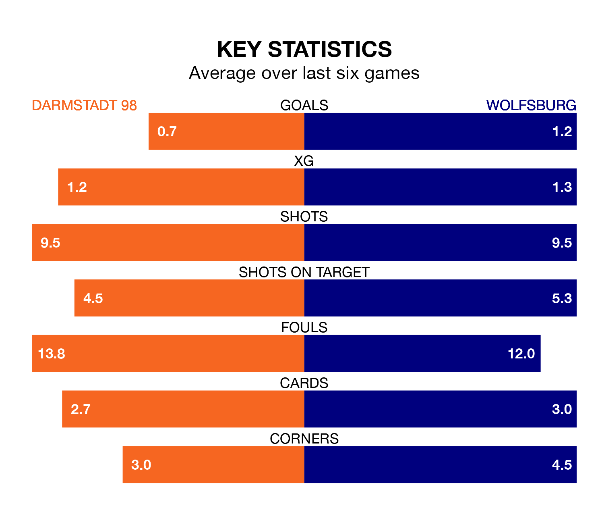

Darmstadt 98 and Wolfsburg both come into Saturday's early kick-off at Merck-Stadion am Böllenfalltor in poor form, having picked up two and four points respectively in their last six games.
Darmstadt 98 have drawn two and lost four of the last six, while Wolfsburg have taken one win and one draw.
Darmstadt 98 are bottom of the table after 14 games, of which they have won two and drawn three, earning nine points.
Wolfsburg are seven places ahead of the hosts in 11th, with five wins and one draw putting them on 16 points.
In Jonas Wind, the away team have one of the league's most on-form strikers so far this season. He has notched nine goals in 14 appearances, to sit fourth in the scoring charts.
His goal rate of one every 136 minutes is quicker than that of Tim Skarke, Darmstadt 98's top scorer with a goal every 228 minutes, and a total of four goals in 12 games.
With 17 goals in 14 games so far this season, Darmstadt 98 are scoring at below the league average rate with 1.2 goals per game. And they are conceding more than average, letting in 37 goals at a rate of 2.6 per game.
Wolfsburg are also below average scorers, with 1.3 goals per game, compared to a league average of 1.7. They have conceded 1.8 goals per game.
Darmstadt 98's last match was on December 9, a 3-2 loss against Heidenheim, with Lennard Maloney (own goal) and Skarke getting the goals for Darmstadt 98.
Wolfsburg lost 1-0 against Freiburg last time out, also on December 9.
